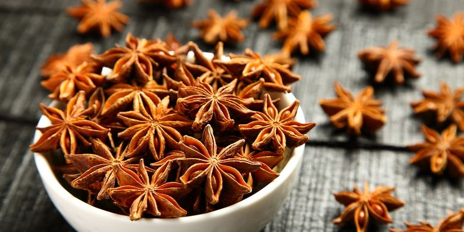

Bunga lawang atau Kembang Lawang atau pekak adalah rempah yang memiliki rasa yang mirip dengan Adas manis. Rempah ini banyak digunakan di dalam masakan negara-negara Asia. Bunga lawang adalah salah satu bumbu tradisional masakan Cina yaitu ngo hiong yang terdiri dari lima jenis rempah. Nama Bunga Lawang dalam Bahasa Tionghoa adalah ba jiao atau bat gok yang memiliki arti "delapan tanduk", sesuai dengan bentuknya yang memiliki delapan kelopak. Bunga Lawang mempunyai bau khas yang kuat. Dari asalnya di Tiongkok, rempah ini mulai diperkenalkan di Eropa pada awal abad ke-17 dan sejak saat itu mulai meraih popularitas. Minyak yang dihasilkan dijadikan bahan perisa dalam minuman. Bunga Lawang sebenarnya bukannya bunga, ia adalah buah yang dihasilkan oleh sejenis pohon kecil. Tinggi pohonnya bisa mencapai 8 meter. Ia mempunyai bunga yang cantik berwarna kuning. Bunga lawang berkembang-biak melalui biji benih. Buahnya dipetik sebelum ranum dan dikeringkan dengan bantuan cahaya matahari.